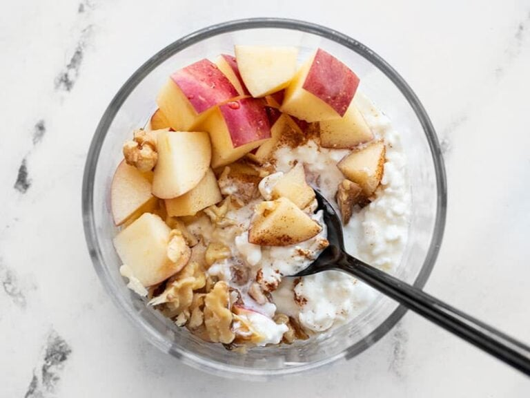

Papka

Description
Papka self-made dish(?) sweet and full of protein.
Very filling and healthy.
Ingredients
- 450g low fat cottage cheese
- 5g cinammon
- 15g walnuts
- 60g oats
- 120g boiling water
- 50g raisins
- 100~200g custard of choice
Steps
- Put oats, raisins and walnuts into a bowl/deep plate
- Pour boiling water on the edges and then over remaining not wet oats
- Cover bowl/deep plate with flat plate and leave for 3~5 min
- Put cinammon, cottage cheese and custard
- Mix well and ready to eat